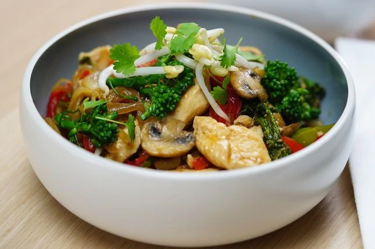

Spaghetti bolognese

This delicious spaghetti main is diabetes-friendly, making it suitable for everyone's dinner.
Ingredients
- 1 tbsp olive oil
- 1 brown onion, finely chopped
- 1 carrot, peeled, finely chopped
- 1 celery stick, trimmed, finely chopped
- 2 garlic cloves, crushed
- 500g Coles beef mince regular
- 2 x Mutti Polpa Finely Chopped Tomatoes 400g
- 2 x 400g cans diced tomatoes
- 1 tsp oregano leaves
- Large pinch ground nutmeg
- 2 tsp sweetener
- 1/2 cup water
- 500g thin spaghetti
- Fresh basil leaves, to serve
- Parmesan cheese, shaved, to serve
Steps
- Heat oil in large saucepan over medium-high heat. Cook onion, carrot, celery and garlic, stirring, for 5 minutes or until softened. Add mince. Cook, breaking up with a wooden spoon, for 6 to 8 minutes or until browned.
- Add paste, tomatoes, oregano, nutmeg and 1/2 cup cold water. Bring to the boil. Reduce heat to low. Simmer, uncovered, for 20 to 30 minutes or until thick. Season with salt and pepper.
- Meanwhile, cook pasta in a large saucepan of boiling, salted water, following packet directions, until tender. Drain.
- Divide pasta among serving bowls. Spoon over sauce. Serve topped with cheese and fresh basil.